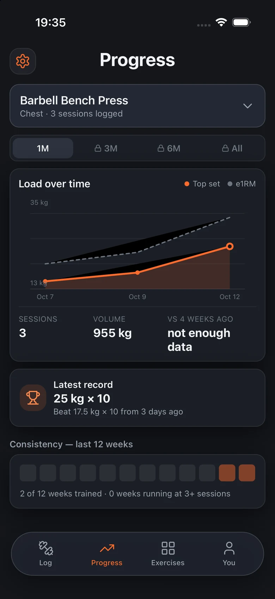
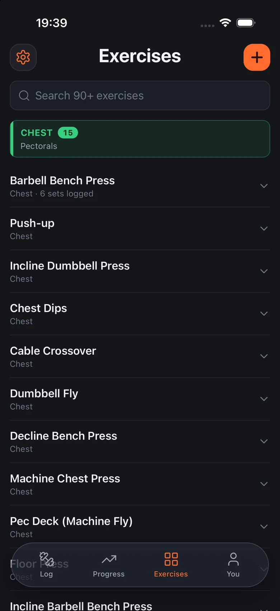
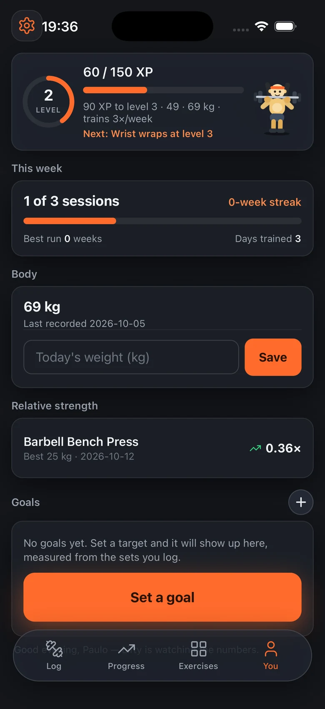
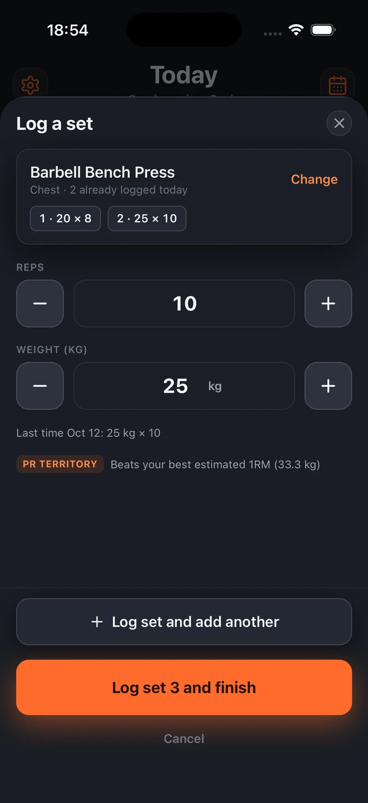
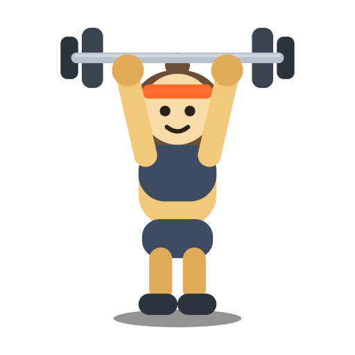
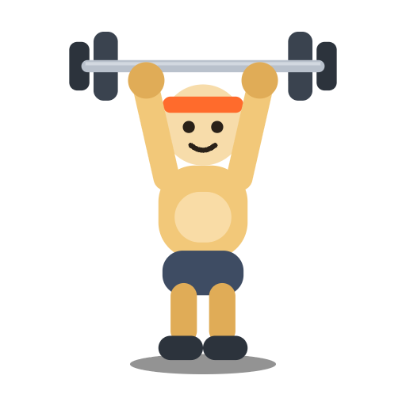

A lifting journal
No programme.
Just progress.
Gym Journal isn't a training plan. It writes down every set as you do it — by hand or by voice — so you can see whether you're actually getting stronger, without being tied to a routine you didn't write.
- No account
- No ads
- Your data stays yours
- Free to download

2 SETS 25 kg × 10
PR 25 kg × 10
00 The idea
Most training apps want to plan your workouts for you. Gym Journal doesn't. You don't need a programme to make progress — you need a record of what you actually lifted.
Pick a split, follow the routine, hit numbers someone else chose: that's what the rest of the category sells. This is the other thing. It writes down each set as you do it, so the progress is yours to read — not somebody's programme telling you it's there.
Log what you trained, in the order you trained it. The record does the rest.
01 The app
Four screens.
Nothing else to learn.
No dashboards to configure, no coach to argue with. The whole app is a log, a chart, a library and you.
Today's session, the sets you've done, and a running volume.

One movement at a time. The chart, the sessions, the volume.

Ninety movements across six body parts, with your own on top.

Level, streak, bodyweight, relative strength and goals.
02 Logging
Logging has to cost nothing, or you stop doing it.
One set, not a spreadsheet. The sheet already knows the last weight you used and tells you when you're in personal-record territory — before you've touched the bar.
- Say it out loud “Bench press 60 kilos for 8” and the set is saved before you leave the rack. Voice runs on your phone, offline — no account, no key, nothing sent anywhere.
- Or by hand Reps and weight with the last time you did it shown underneath, so you know what you're beating.
- 90 exercises, six body parts Chest, back, legs, arms, shoulders and core — plus movements of your own.
- kg or lb, warm-ups marked Set your unit once. Warm-up sets stay out of your records, and the plate maths is there when you load the bar.

Personal record
Back squat
105 kg × 5
Beat 100 kg × 5 from three weeks ago
03 The payoff
Proof you're getting stronger.
The only way to see progress is to look back — and looking back is miserable when the numbers are in your head. Gym Journal keeps them, catches every record as it happens, and shows you the trend on the movements that matter to you.
- Records, caught automatically Beat your best estimated 1RM and the app notices, celebrates it properly, and files it against the movement.
- Charts by movement, by period Load over time with top set and estimated 1RM, sessions logged, volume, and how it compares with four weeks ago.
- A weekly streak that's honest It counts the weeks you trained — not the days you didn't.


04 The habit
Consistency, without the nagging.
Progress on your terms means a goal you set, not a target someone assigned. Say you're chasing 100 kg on the squat, or two hundred reps of rows in a month — Gym Journal measures it from the sets you actually log.
- Goals that are yours A weight you're chasing, or a total number of reps. It shows up on the You screen, measured from your own sets.
- Levels, and gear for Lifty He levels up as you train, and picks up new kit on the way. It's a mascot, not a coach.
- Reminders that stay quiet Two a day at most, and they back off if you stop answering. You can turn them off entirely and lose nothing.
05 Plans
Free for ever. Pro is depth.
Everything that makes the app worth opening — logging, your history, streaks, records and plate maths — costs nothing and always will. Pro sells a longer view of data you already own. It never sells access to your own sets.
Free
For ever
- Unlimited logging — sets, reps, loads, warm-ups, by hand or by voice.
- Your full history — every session you've ever recorded, readable for ever.
- Personal records — caught and celebrated automatically.
- The weekly streak and the one-month chart range.
- Plate maths, kg or lb, and iCloud sync across your devices.
Pro
From a 3-day free trial
- The long view — chart three months, six months or everything, and watch each lift trend.
- Unlimited movements of your own — two free, as many as you train with Pro.
- Monthly, yearly, or a one-time lifetime unlock. Cancel any time.
Current prices, the trial length and the lifetime unlock are shown on the App Store listing, where Apple localises them for your region.
06 Your data
No accounts, no ads, no data mining.
Gym Journal doesn't collect anything when you download and use it. Registration isn't required, and there's no analytics SDK sitting underneath the log screen. What you lift is nobody's business but yours.
On your device
Your sets live on the phone in your pocket. Uninstalling the app is the opt-out, and it works completely.
Synced through your iCloud
Turn sync on and your sets travel through your own private iCloud. We never see them.
Nothing shared
No third parties, no location, no microphone recording kept. Voice is transcribed on-device and the audio is never saved.
07 Questions
Reasonable things to ask.
Is this a training app? Will it tell me what to lift?
No, and that's the point. Gym Journal doesn't build programmes, prescribe splits or pick your weights — other apps do that better and this one doesn't try. It's a journal: it records what you did and shows you whether the numbers are moving.
Do I need an account?
No. There's no signup, no login and no email required. Open it, tell it your bodyweight if you want relative strength, and start logging.
How does voice logging work if there's no server?
You hold the talk button and say the set — “bench press 60 kilos for eight”. It's turned into a logged set on your phone. When the on-device speech model is available it runs entirely offline; otherwise iOS dictation handles it. The audio is never saved, by us or by the app.
What exactly does Pro unlock?
Two things, both about depth rather than access: the longer chart ranges (three months, six months, all time — one month is free), and unlimited movements of your own beyond the two free custom exercises. Logging, your history, streaks, records and plate maths stay free for ever.
What happens to my data if I stop paying?
Nothing is taken away. Every session you've logged stays readable at any range, and movements you created stay editable and deletable. Pro buys a longer window on the chart, not ownership of your training history.
Which languages does it speak?
English, Spanish and French — including the voice commands, which follow the language you've set.
Does it work on iPad?
Yes. Gym Journal runs on iPhone and iPad, and syncs between them through your own iCloud when you turn sync on.
Start with your next set
Write down your lifts.
Watch them add up.
Free to download, free to log, free for ever. Bring the routine you already follow — Gym Journal just keeps the record.